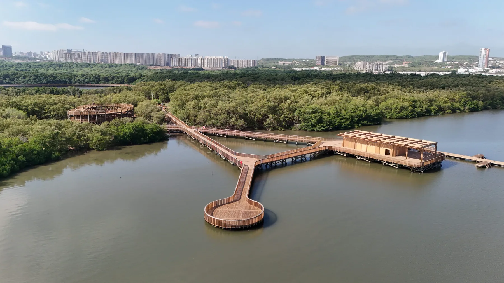
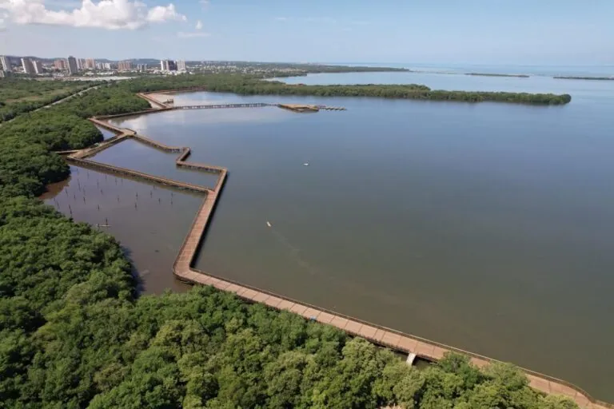

Ciénaga de Mallorquín
Humedal costero y manglar en el norte de Barranquilla. Recorre el mapa, reporta problemas y conoce las especies que viven aquí.
Un humedal vivo junto a la ciudad
La Ciénaga de Mallorquín es un humedal costero de gran importancia ecológica, ubicado en el norte de Barranquilla. Su manglar es hogar de muchas aves y peces, y de plantas que cumplen funciones vitales para la región.
- Más de 150
- especies de aves
- 36 a 42
- especies de peces
- Más de 300.000
- visitas anuales recientes
Qué puedes hacer aquí
- Explorar el mapaUbica los lugares de interés y mira dónde estás con el GPS de tu celular.Abrir mapa
- Reportar un problemaAyúdanos a cuidar el ecosistema avisando de problemas ambientales o de infraestructura.Hacer un reporte
- Conocer la biodiversidadDescubre las especies de fauna y flora que habitan este humedal.Ver especies
El recorrido


Cuándo ir
Para una mejor experiencia y menos sol, visita antes de las 9:00 a. m. o después de las 2:00 p. m., en días entre semana.
Mejores horasAntes de las 9:00 o después de las 14:00, entre semana
Más genteDe 9:00 a 12:00. Los fines de semana hay más visitantes
Sol más fuerteDe 10:30 a 13:30
Confirma el horario de apertura del ecoparque antes de ir.